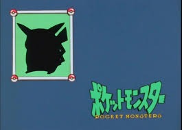
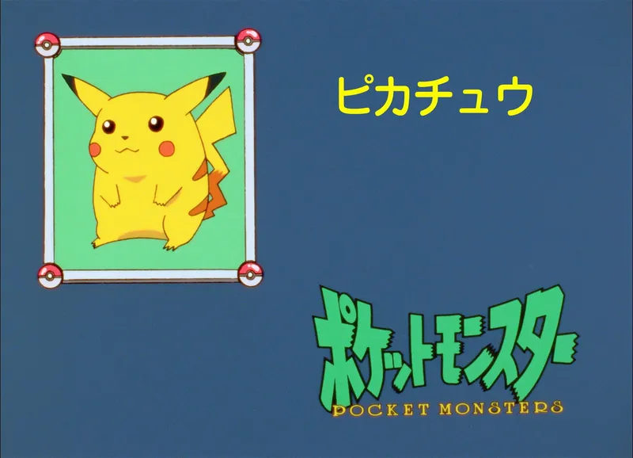
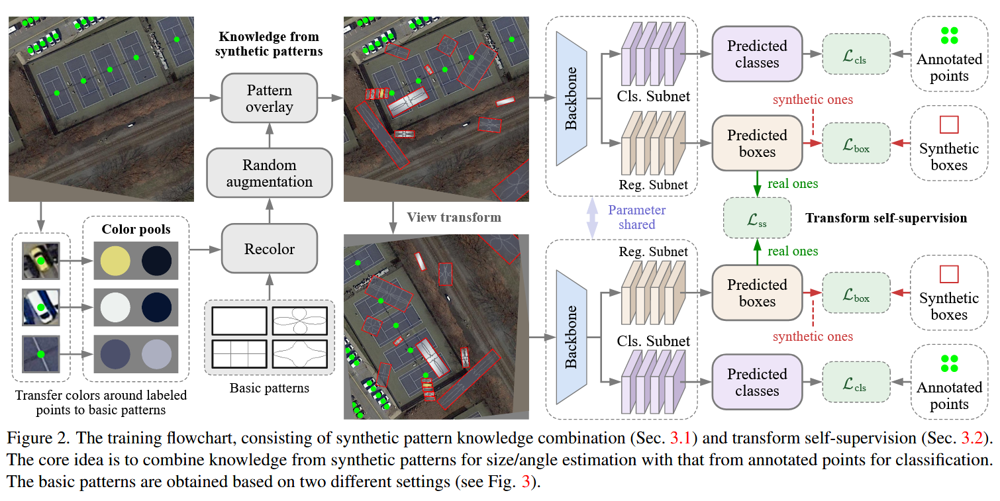
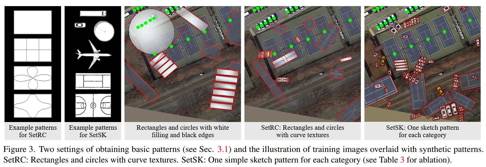

《Point2RBox: Combine Knowledge from Synthetic Visual Patterns for End-to-end Oriented Object Detection with Single Point Supervision》 阅读笔记
简介
利用知识组合和自监督的方式，让网络能够通过点标注，学习到点标注中没有的尺度，预测旋转框。是第一个端到端的点监督方案。
背景
H2RBox 和它的 v2 出现了，Point2RBox 还会远吗？
其实已经存在一些点监督的检测器了：P2BNet、Point2Mask、SAM……但是它们成本高效率低精度差，而且没有端到端的直接从点到旋转框的方法。
既然人类具有从草图里面学习到物体特征，并且能够通过学习到的内容和一些引导（比如用手指）辨认出目标，那么模型也可以有这个能力。


实现
模型由两个部分组成：合成图案知识组合和变换自监督。

合成图案知识组合
没有可以学习的东西，我们就自己创造用来学习的东西。通过一些方法生成学习的 pattern 并且进行数据增强+NMS，然后随机覆盖在在输入图像上（边缘透明）。这些带有旋转框的 pattern 用来监督回归损失。

两种图案生成方式
- SetRC
通过白色矩形和黑色线合成图案。
线可以是几根平行线，也可以是满足这个极坐标方程的曲线：
ρ=(1−k)∣cosn(2θ)∣+k
- SetSK
引入少量人工先验，把 dataset 的每一个类别抠图并且处理成灰度图像（白色表面，黑色边缘）。
上色
{Cface=mean(I0)Cedge=sum(dI1)
论文中，I0取5×5，I1取 33×33。
按照这个方式处理，通过每个点标注提取它的邻域的颜色，决定合成图案的表面颜色和边缘颜色。
第一条就是取离点很近的位置的颜色均值（代表它最明显的颜色），第二条用像素梯度幅度d加权颜色（梯度d需要归一化为 1）求和，这样周围剧烈变化的像素（更可能是边缘）就会贡献更大。
然后给图案涂颜色：
Precolor=PCface+(1−P)Cedge
之后就是数据增强（随机翻转、放缩大小、旋转）然后随机放置。
另外，在放置的时候，会处理成中间透明边缘不那么透明的，以免遮挡 GT。
变换自监督
把 H2RBox 中的旋转和翻转合并，再加进一个缩放，并且设置有 30%的概率缩放，剩下的P(旋转):P(翻转)=95:5。
然后让原始视图和变换视图相互自监督。注意变换的时候不能把合成图案放进去一起变，它们已经有可知的边界框了。
旋转和翻转和以前的损失没有任何区别。缩放的损失，是把原始图像缩放之后，把两个图像取外接水平框后计算 GIoU。
这里不用 CircumIoU loss 的原因应该是因为这里需要的是缩放一致性，而不是输出矩形框，所以用低成本的 GIoU 即可。
损失函数
下面的损失函数用的L都取决于 backbone。
-
点监督的损失：
{Lcls=Lcls(Mpointcpred,Mpointcgt)Lcen=L1(Mpointxypred,Mpointxygt)
单纯是在计算类别和中心点损失。M是掩码，筛选出来真实的点标注对应的旋转框。
-
知识组合损失：
Lbox=Lbox(MboxBpred,MboxBgt)
Mbox是筛选出合成图案对应的框。
-
变换自监督损失：
Lss=Lflip/rot/sca(MoriMpointBpred,MtrsMpointBpred)
把参与了变换的框过滤出来，计算损失
-
总损失
加权相加即可。
标签分配
因为点标注没法提供尺寸相关的信息，所以 backbone 不能用 FPN-based 的 detector 作为 backbone。难得 YOLOF 是只使用一个级别的尺度特征，它使用尺寸 32, 64, 128, 256 和 512 的锚框，它自己的锚框分配逻辑还是不能用。所以只能自己制定分配策略。
用 YOLOF 作为 backbone，但是把它的所有五种 anchor size 调到同一个值（DOTA 是 64，别的是 128），但是 anchor size 不减少。（减少的话会掉点）
分配策略：中心点太远的就不要，近的话按照分类损失（种类能匹配上的可能性越高越好）匹配。对于每一个 GT，用 K 邻近找到四个最高分的锚框匹配。
score={0,Lcls(cpred,cgt),L1(xypred,xygt)>32otherwise